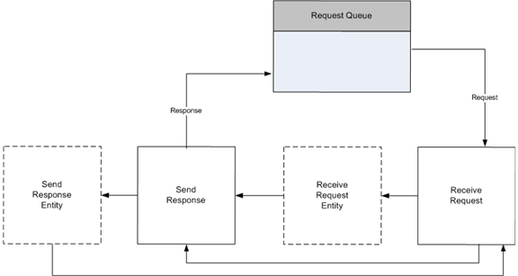

Processing requests includes four steps:

The HTTP Server API supplies a request structure to store the parsed incoming request. This structure is allocated by the application, and initialized when an incoming request is received. The application calls the HttpReceiveHttpRequest function to receive the request. If the request buffer is too small to receive the request, the application can increase the buffer size and call HttpReceiveHttpRequest again to receive the entire request.
If the request includes entity body data to be received, the applications calls HttpReceiveRequestEntityBody with the request ID returned in the pRequestBuffer parameter during the call to HttpReceiveHttpRequest.
The application performs application-specific processing of the request and formulates a response. The HTTP Server API imposes no timeout on this process.
When the application is finished handling the request and formulating the response, it calls the HttpSendHttpResponse function to send the response. If the response includes entity body data to send, the application also calls HttpSendResponseEntityBody.
After the application has received a request ID from its call to HttpReceiveHttpRequest, it can at any time cancel the request by calling HttpCancelHttpRequest.
Â
Â